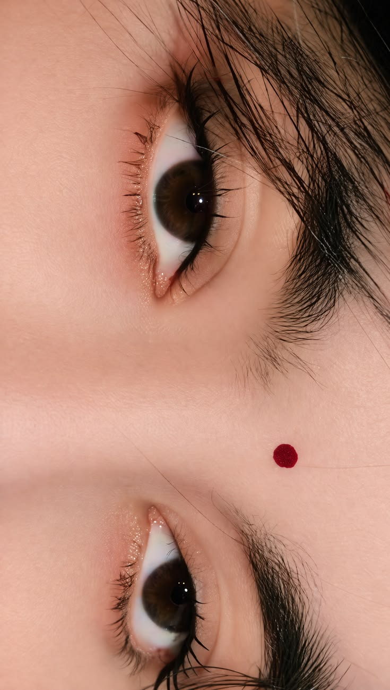

a small page, just for you
HER<3
there is no occasion. only this.
scroll ↓

I could write a thousand lines, and still none would hold
what it feels like to be looked at by your eyes.
They give you away before you ever say a word — every soft thing, every storm, all of it, right there.
And your hair — like ink let loose,
falling the way only something soft and certain can fall.
I notice the small things about you. I think I always will.
No reason needed.
This isn't for a birthday, or an anniversary, or anything the calendar gave us.
It's just a Saturday where I was thinking of you — your eyes, your hair, the whole quiet shape of you — and wanted you to know it.
— always, your special one